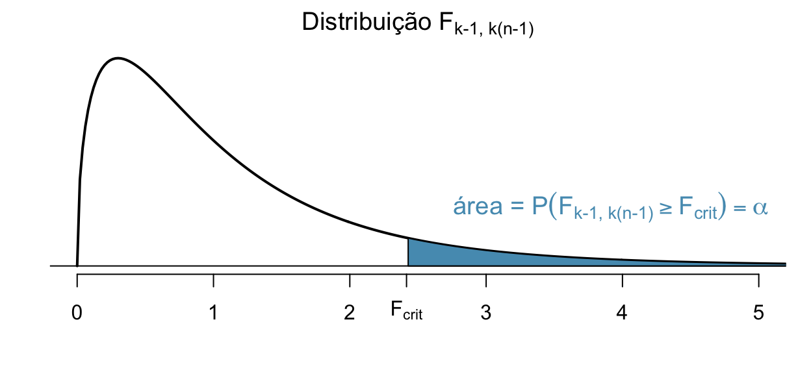
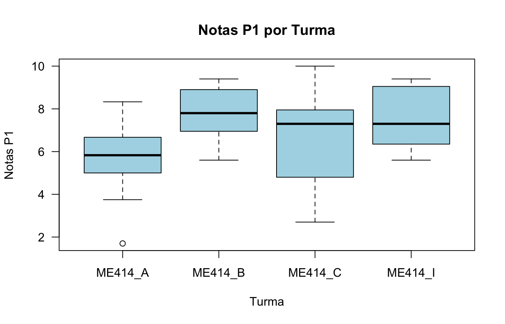
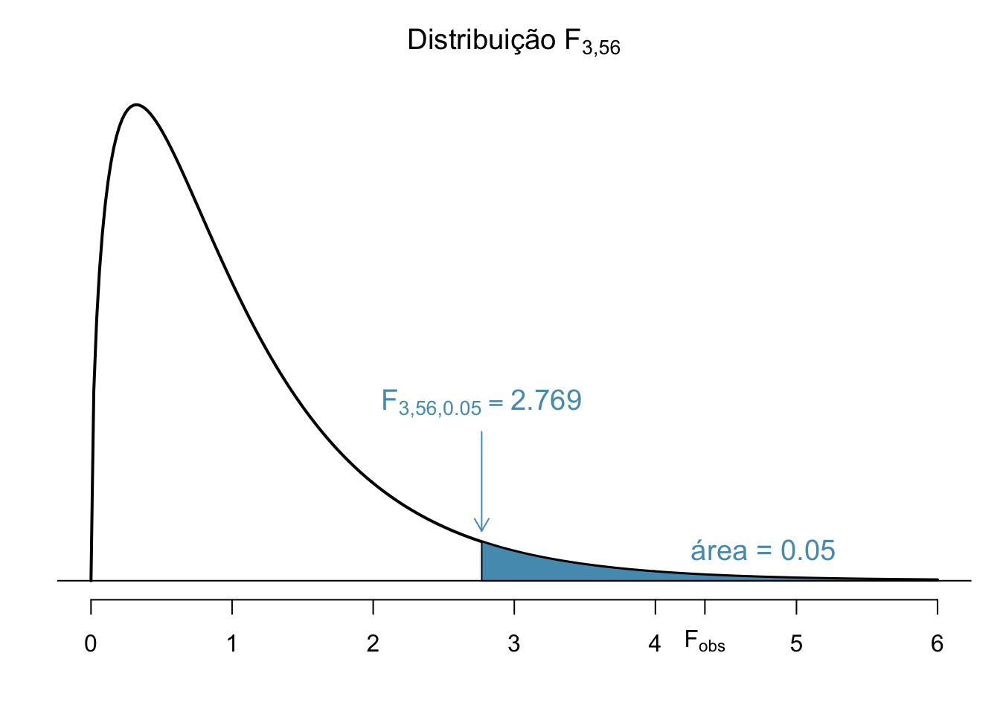
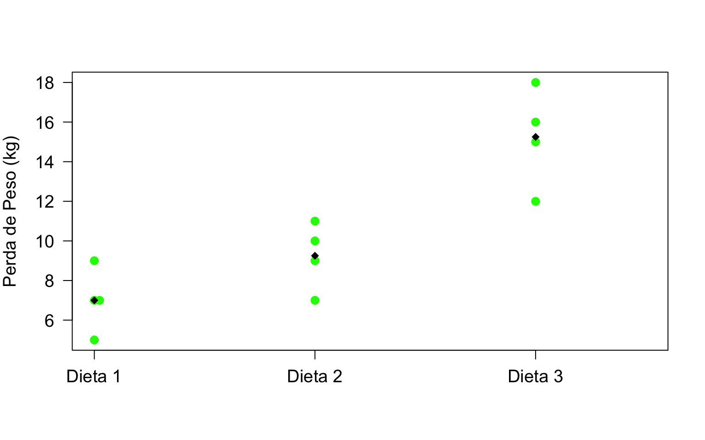
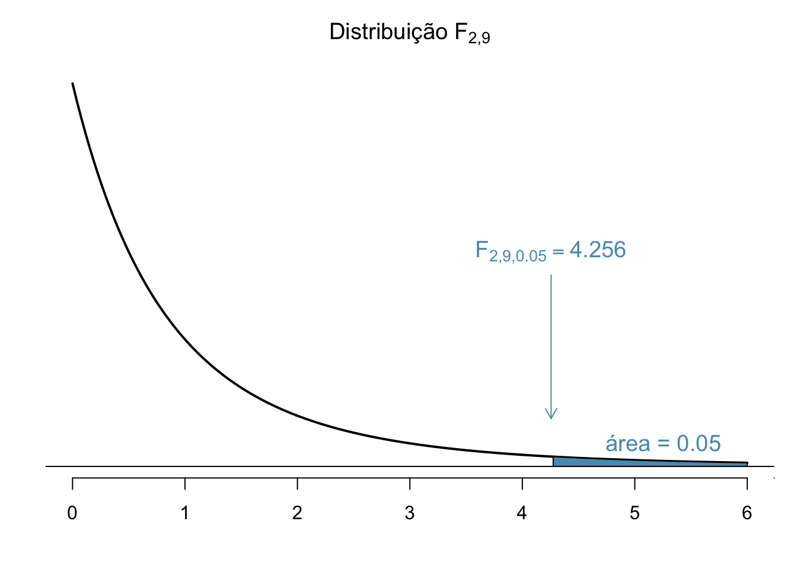

Análise de Variância (ANOVA)
Introdução
Já vimos anteriormente como testar se existe diferença entre duas médias \(\mu_1\) e \(\mu_2\) de duas populações independentes. Ou seja:
\[H_0: \mu_1=\mu_2 \quad \mbox{vs} \quad H_a: \mu_1 \neq \mu_2\]
Considerando o caso das variâncias iguais e desconhecidas, usamos \(s_p^2\) como estimador da variância \(\sigma^2\) e temos a estatística do teste: \[T= \frac{\bar{X} - \bar{Y}}{ \sqrt{s_p^2 ( \frac{1}{n} + \frac{1}{m}} )} \stackrel{H_0}{\sim} t_{n+m-2}.\]
Mas e se quiséssemos comparar as médias de 3 ou mais populações (grupos)?
Análise de Variância
Exemplo: O Departamento de Estatística oferece o curso ME414 todo semestre para várias turmas. Suponha que queremos saber se existe diferença significativa no desempenho na P1 entre as turmas A, B, C e I.
Poderíamos comparar as médias duas a duas, certo?
No entanto, isso não é muito viável quando temos muitos grupos.
A técnica estatística adequada para esse tipo de problema, com a qual pode-se comparar se as médias de várias populações (grupos) são todas iguais com um único teste é chamada de Análise de Variância (ANOVA).
Análise de Variância - ANOVA
Objetivo: Comparar se as médias de 3 ou mais populações (grupos) são iguais.
Hipóteses: \[\begin{aligned} H_0: &\mbox{as médias são as mesmas para todos os grupos} \\ H_a: & \mbox{pelo menos uma média é diferente das demais} \end{aligned} \]
Em termos estatísticos: \[\begin{aligned} H_0: &\mu_1=\mu_2=\ldots=\mu_k \\ H_a: & \mbox{pelo menos uma média é diferente das demais} \end{aligned} \]
A estatística do teste, chamada de F, é conceitualmente o seguinte: \[F = \frac{\mbox{Variação Entre as Médias Amostrais dos Grupos}}{\mbox{Variação Média Dentro dos Grupos}}\]
ANOVA - Condições
Devemos checar três condições nos dados onde iremos realizar a ANOVA:
as observações são independentes dentro dos grupos e entre os grupos;
os dados dentro de cada grupo são aproximadamente normais; e
a variância é aproximadamente constante entre os grupos.
Detalhes da ANOVA
Um conceito fundamental em Análise de Variância é que a variação total dos dados, considerando todas as amostras como vindas de uma única população, pode ser separadas em duas partes:
variação devido às diferenças entre as médias dos grupos
variação das observações dentro de cada grupo
Ou seja, escrevendo como uma equação:
\[\mbox{Variação Total = Variação Entre Grupos + Variação Dentro dos Grupos}\]
Iremos ver agora como medir cada uma dessas variações.
Estrutura dos Dados
| Grupos | Observações | Média |
|---|---|---|
| Grupo 1 | \(X_{11}, X_{12}, X_{13}, \ldots, X_{1n}\) | \(\bar{X}_1\) |
| Grupo 2 | \(X_{21}, X_{22}, X_{23}, \ldots, X_{2n}\) | \(\bar{X}_2\) |
| \(\vdots\) | \(\vdots\) | \(\vdots\) |
| Grupo k | \(X_{k1}, X_{k2}, X_{k3}, \ldots, X_{kn}\) | \(\bar{X}_k\) |
Veja que a média e variância amostral para cada grupo são calculadas como: \[\bar{X}_i = \frac{1}{n} \sum_{j=1}^n X_{ij} \quad \mbox{e} \quad s_i^2 = \frac{1}{n-1} \sum_{j=1}^n (X_{ij} - \bar{X}_i)^2\]
Notação
Considere a seguinte notação:
\(k\): número de populações ou grupos
\(n\): tamanho de cada grupo
\(X_{ij}\): a \(j\)-ésima observação dentro do \(i\)-ésimo grupo, \(i=1, \ldots, k\) e \(j=1,\ldots,n\)
\(\bar{X}_i\): média amostral do \(i\)-ésimo grupo
\(\bar{X}\): média amostral considerando todas as observações como parte de um único grupo/população.
\(s_i\): desvio padrão amostral do \(i\)-ésimo grupo
Variação Total
A variação total das observações é chamada de Soma de Quadrados Total ou \(SQ_T\) e é calculada como o numerador da variância amostral se todas as observações fossem combinadas em um único grupo. Ou seja, \[SQ_T = \sum_{i=1}^k \sum_{j=1}^n (X_{ij} - \bar{X})^2\]
Analiticamente pode-se mostrar que: \[\begin{aligned} SQ_T = \sum_{i=1}^k \sum_{j=1}^n (X_{ij} - \bar{X})^2 &= n \sum_{i=1}^k (\bar{X_i} - \bar X)^2 + \sum_{i=1}^k \sum_{j=1}^n (X_{ij} - \bar{X}_i)^2 \\ &= SQ_G + SQ_E \end{aligned} \]
Veremos agora o que são \(SQ_G\) e \(SQ_E\).
Variação Entre Grupos
A variação entre as médias dos grupos é chamada de Soma de Quadrados Entre Grupos ou \(SQ_G\) e é calculada da seguinte forma:
\[SQ_G = n \sum_{i=1}^k (\bar{X_i} - \bar X)^2 = n(\bar{X}_1 - \bar X)^2+ \ldots + n(\bar{X}_k - \bar X)^2\]
Veja que é a soma ponderada das diferenças entre as médias dos grupos \(\bar{X}_i\) e a média geral \(\bar X\) ao quadrado.
O numerador da estatística \(F\) é chamado de Quadrado Médio Entre Grupos ou \(QM_G\) e pode ser visto como sendo a variância amostral das médias dos grupos: \[QM_G = \frac{SQ_G}{k-1}\]
Variação Dentro dos Grupos
A variação das observações dentro dos grupos é chamada de Soma de Quadrados do Erro ou \(SQ_E\) e é calculada da seguinte forma: \[SQ_E = \sum_{i=1}^k \sum_{j=1}^n (X_{ij} - \bar{X}_i)^2 = \sum_{i=1}^k (n-1) s^2_i\]
Ou seja, é a soma ponderada das variâncias amostrais para o \(i\)-ésimo grupo.
O denominador da estatística \(F\) é chamado de Quadrado Médio do Erro ou \(QM_E\) e é a estimativa da variância populacional para \(k\) grupos: \[QM_E = \frac{SQ_E}{k(n-1)} = \frac{(n-1) s^2_1 + \ldots + (n-1) s^2_k}{kn-k}\]
Teste de Igualdade das Médias para \(k\) Grupos
Resumindo, estamos interessados em testar as hipóteses: \[\begin{aligned} H_0: &\mu_1=\mu_2=\ldots=\mu_k \\ H_a: & \mbox{pelo menos uma média é diferente das demais} \end{aligned} \]
A estatística do teste é dada por: \[F = \frac{QM_G}{QM_E} = \frac{\frac{SQ_G}{k-1}}{\frac{SQ_E}{k(n-1)}}\]
Sob a hipótese \(H_0\) de igualdade das médias, a estatística do teste segue uma distribuição \(F\) com \(k-1\) graus de liberdade no númerador e \(k(n-1)\) graus de liberdade no denominador. Ou seja, \[F \stackrel{H_0}{\sim} F_{k-1, k(n-1)}\]
Tabela F
Os valores críticos da distribuição \(F\) para \(\alpha=0.05\) ou \(\alpha=0.01\) estão na tabela abaixo. As linhas e colunas representam os graus de liberdade do denominador (\(\nu_2\)) e numerador (\(\nu_1\)), respectivamente.

Teste de Igualdade das Médias para \(k\) Grupos
Valor Crítico: Para um nível de significância \(\alpha\), encontrar o valor crítico \(F_{crit}\) na tabela \(F\) com \(k-1\) graus de liberdade no numerador e \(k(n-1)\) graus de liberdade no denominador tal que \(P(F_{k-1, k(n-1)} \geq F_{crit}) = \alpha.\)

Conclusão: Rejeitamos \(H_0\) se \(F_{obs} \geq F_{crit} = F_{k-1, k(n-1), \alpha}\)
Tabela ANOVA
Tudo o que discutimos até agora pode ser resumido na tabela abaixo. Essa tabela é chamada de Tabela ANOVA
| Fonte de Variação | Soma de Quadrados | Graus de Liberdade | Quadrado Médio | Estatística F |
|---|---|---|---|---|
| Grupos (Entre) | \(SQ_G\) | \(k-1\) | \(QM_G\) | \(\displaystyle F = \frac{QM_G}{QM_E}\) |
| Erro (Dentro) | \(SQ_E\) | \(k(n-1)\) | \(QM_E\) | |
| Total | \(SQ_T\) | \(kn-1\) |
Na prática, basta calcular \(SQ_T\) e \(SQ_G\) e obter a \(SQ_E\) por subtração: \[SQ_T = SQ_G + SQ_E \qquad \Longrightarrow \qquad SQ_E = SQ_T - SQ_G\]
Turmas de ME414 - Notas P1
Voltando no exemplo das notas da P1 para as turmas A, B, C e I. Selecionamos ao acaso 15 alunos de cada turma e anotamos sua respectiva nota na P1.
A tabela abaixo mostra as notas dos primeiros 5 alunos.
| Aluno | ME414_A | ME414_B | ME414_C | ME414_I |
|---|---|---|---|---|
| 1 | 5.00 | 7.8 | 9.6 | 9.4 |
| 2 | 8.33 | 5.6 | 7.3 | 8.5 |
| 3 | 5.00 | 6.7 | 2.7 | 5.6 |
| 4 | 6.67 | 9.4 | 10.0 | 6.0 |
| 5 | 6.67 | 9.4 | 5.5 | 6.7 |
ME414 - Notas P1

Existe diferença do desempenho na P1 entre as turmas?
Estatísticas Descritivas
| n | Média | Variância | Desvio Padrão | |
|---|---|---|---|---|
| ME414_A | 15 | 5.71 | 3.02 | 1.74 |
| ME414_B | 15 | 7.71 | 1.75 | 1.32 |
| ME414_C | 15 | 6.45 | 6.10 | 2.47 |
| ME414_I | 15 | 7.66 | 2.18 | 1.48 |
A média geral, considerando todas as notas como sendo de uma única turma é \(\bar X = `r mu\).
Cálculo das Somas de Quadrados
\[\begin{aligned} SQ_T &= \sum_{i=1}^4 \sum_{j=1}^{15} (X_{ij} - \bar{X})^2 = 225.31 \\ \\ SQ_G &= n \sum_{i=1}^4 (\bar{X_i} - \bar X)^2 \\ &= 15\left[(5.71 - 6.88)^2 + (7.71 - 6.88)^2 + (6.45 - 6.88)^2 + (7.66 - 6.88)^2 \right] \\ &= 42.59 \\ \\ SQ_E &= SQ_T - SQ_G \\ &= 225.31 - 42.59 = 182.72 \end{aligned} \]
ANOVA - Notas P1 por Turma
| Fonte de Variação | Soma de Quadrados | Graus de Liberdade | Quadrado Médio | Estatística F |
|---|---|---|---|---|
| Grupos (Turma) | \(42.59\) | \(3\) | \(14.2\) | \(\displaystyle F = \frac{14.2}{3.26} = 4.351\) |
| Erro | \(182.72\) | \(56\) | \(3.26\) | |
| Total | \(225.31\) | \(59\) |
Para \(\alpha=0.05\), olhando na tabela F com 3 e 56 graus de liberdadeo, o valor crítico é \(F_{crit} = F_{3, 56, 0.05} = 2.769\).
Conclusão: Para \(\alpha = 0.05\), como \(F_{obs}= 4.351 > 2.769 = F_{crit},\) rejeitamos a hipótese de que as médias da P1 para todas as turmas são iguais.
Notas P1 por Turma

Exemplo: Qual dieta você faria?
Uma nutricionista quer comparar a perda de peso para três tipos diferentes de dieta. Ela selecionou 12 de seus pacientes e escolheu 4 ao acaso para fazer cada uma das dietas. Depois de um período de três meses os pacientes foram pesados e a perda de peso (em Kg) foi a seguinte:
| Paciente | Dieta 1 | Dieta 2 | Dieta 3 |
|---|---|---|---|
| 1 | 7 | 9 | 15 |
| 2 | 9 | 11 | 12 |
| 3 | 5 | 7 | 18 |
| 4 | 7 | 10 | 16 |
Exemplo: Dieta
| n | Média | Variância | Desvio Padrão | |
|---|---|---|---|---|
| Dieta 1 | 4 | 7.00 | 2.67 | 1.63 |
| Dieta 2 | 4 | 9.25 | 2.92 | 1.71 |
| Dieta 3 | 4 | 15.25 | 6.25 | 2.50 |
Exemplo: Dieta

Exemplo: Dieta
| Fonte de Variação | Soma de Quadrados | Graus de Liberdade | Quadrado Médio | Estatística F |
|---|---|---|---|---|
| Dieta | \(145.5\) | \(2\) | \(72.75\) | \(F = 18.444\) |
| Erro | \(35.5\) | \(9\) | \(3.94\) | |
| Total | \(181\) | \(11\) |
Para \(\alpha=0.05\), olhando na tabela F com 2 e 9 graus de liberdadeo, o valor crítico é \(F_{crit} = F_{2, 9, 0.05} = 4.256\).
Conclusão: Para \(\alpha = 0.05\), como \(F_{obs}= 18.444 > 4.256 = F_{crit},\) rejeitamos a hipótese de que as perdas de peso médias para todas as dietas são iguais.
Exemplo: Dieta

Leituras
- OpenIntro: seção 5.5
- Magalhães: seção 9.4
Slides produzidos pelos professores:
Samara Kiihl
Tatiana Benaglia
Benilton Carvalho